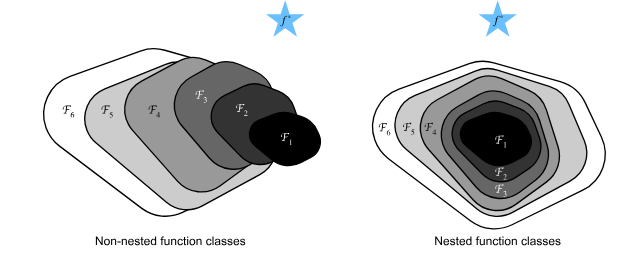
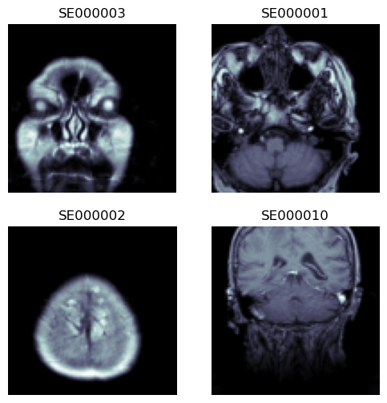
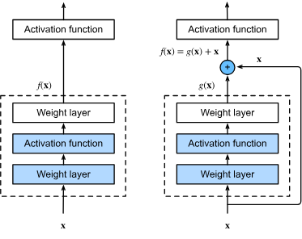
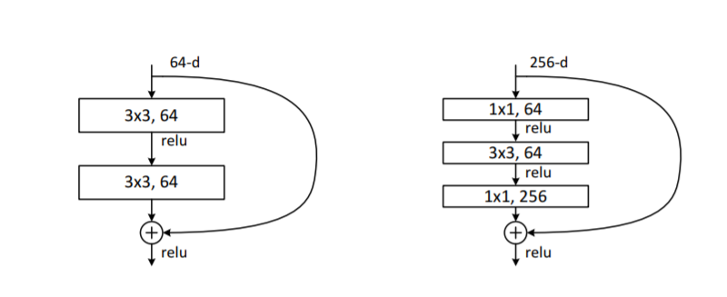
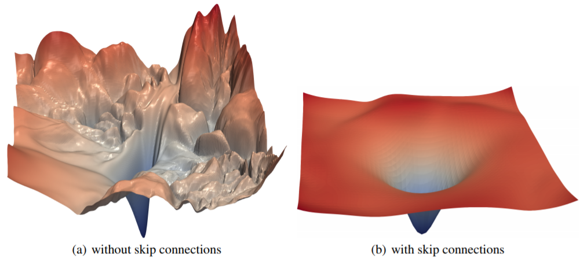

Show code cell source
from fastai.vision.all import *
from fastai.medical.imaging import get_dicom_files, PILDicom
import warnings
warnings.filterwarnings('ignore')
ResNets para Análisis de Imágenes Biomédicas#
En esta lección, ampliaremos el estudio de las Redes Neuronales Convolucionales (CNNs) para comprender la arquitectura ResNet (Residual Network), una herramienta poderosa en el análisis de imágenes médicas. Las ResNets fueron introducidas en 2015 por Kaiming He et al. en “Deep Residual Learning for Image Recognition”. Desde entonces, se han adoptado ampliamente, especialmente en aplicaciones de imágenes médicas como resonancia magnética (MRI), tomografía computarizada (CT) y radiografías. La principal ventaja de la arquitectura es su capacidad de entrenar redes muy profundas, algo esencial para detectar patrones sutiles en imágenes médicas de alta resolución.
Primero exploraremos los fundamentos de ResNet, y luego discutiremos modificaciones recientes que mejoran su rendimiento.
Clases de Funciones#
Al diseñar redes neuronales, resulta útil pensar en la clase de funciones que una arquitectura determinada puede representar. Formalmente, sea \(\mathcal{F}\) el conjunto de todas las funciones que pueden realizarse con una arquitectura de red específica junto con una elección de hiperparámetros (como tasa de aprendizaje, inicialización o regularización). En otras palabras, para cualquier \(f \in \mathcal{F}\) existe un conjunto de pesos y sesgos tal que el entrenamiento puede producir \(f\).
Ahora supongamos que existe una función “verdadera” subyacente \(f^*\) que describe perfectamente la relación entre entradas y salidas en nuestros datos. Si \(f^* \in \mathcal{F}\), entonces en principio estamos bien: con suficientes datos de entrenamiento y una optimización adecuada, nuestra clase de modelos es suficientemente expresiva para capturar la verdad. Sin embargo, en la práctica esto rara vez ocurre. Típicamente, \(f^*\) está fuera del alcance de \(\mathcal{F}\), por lo que apuntamos a la mejor aproximación posible dentro de la clase:
donde \(L(\mathbf{X}, \mathbf{y}, f)\) es la pérdida en los datos de entrenamiento. Así, \(f^*_{\mathcal{F}}\) representa la mejor función alcanzable con la familia de modelos elegida.
Clases de Funciones Más Grandes#
Uno podría asumir que ampliar la clase de funciones siempre debería dar una mejor aproximación. Por ejemplo, si reemplazamos \(\mathcal{F}\) con una clase más rica \(\mathcal{F}'\), parece natural esperar que \(f^*_{\mathcal{F}'}\) esté “más cerca” de \(f^*\). Sin embargo, esto no está garantizado a menos que \(\mathcal{F}\) esté contenida en \(\mathcal{F}'\).
Para clases no anidadas, aumentar la capacidad a veces puede alejarnos de la verdad. Como se ilustra en la figura, \(\mathcal{F}_3\) está más cerca de \(f^*\) que \(\mathcal{F}_1\), pero \(\mathcal{F}_6\) se aleja aún más. Simplemente ampliar el espacio de soluciones posibles no es suficiente.
Para clases anidadas (\(\mathcal{F}*1 \subseteq \mathcal{F}*2 \subseteq \dots\)), cada expansión incrementa estrictamente el poder expresivo, garantizando que \(f^**{\mathcal{F}*{k+1}}\) sea al menos tan bueno como \(f^*_{\mathcal{F}_k}\) (en términos de error de aproximación).

Esta distinción resalta por qué el diseño arquitectónico importa: no toda capa o parámetro adicional conduce a mejoras significativas.
Redes Profundas y la Función Identidad#
En redes neuronales profundas, estas consideraciones son especialmente importantes. Supongamos que añadimos una capa extra a un modelo. Si esa capa no puede entrenarse para comportarse como la función identidad (\(f(\mathbf{x}) = \mathbf{x}\)), la red más profunda podría en realidad funcionar peor, distorsionando representaciones de manera poco útil.
Pero si la función identidad está incluida en la clase de funciones del modelo más profundo, entonces, en el peor de los casos, la red puede reproducir el rendimiento del modelo más superficial. En el mejor de los casos, puede usar la capa adicional para descubrir una representación que reduzca el error de entrenamiento.
Esta idea motivó directamente el desarrollo de las redes residuales (ResNets) por He et al. (2016). La clave es que cada nuevo bloque de capas debe implementar fácilmente la identidad y luego aprender funciones residuales sobre ella. Matemáticamente, en lugar de aprender una transformación arbitraria \(F(\mathbf{x})\), un bloque residual aprende:
de manera que si \(F(\mathbf{x}) = 0\), el bloque simplemente pasa su entrada sin cambios. Esto asegura que las redes más profundas contengan a sus contrapartes más superficiales como casos especiales.
Impacto y Uso Ampliado#
Las conexiones residuales tuvieron un impacto transformador en el deep learning. Gracias a ellas, redes muy profundas (cientos de capas) se volvieron entrenables y lograron resultados de vanguardia. ResNets ganaron el ImageNet Large Scale Visual Recognition Challenge 2015 y reformaron el diseño de modelos profundos.
Desde entonces, el principio de conexiones de salto o enlaces residuales se ha adoptado ampliamente:
Redes recurrentes: para estabilizar el entrenamiento en secuencias largas (Prakash et al., 2016; Kim et al., 2017).
Transformers: la arquitectura dominante en NLP y visión se basa fuertemente en conexiones residuales para apilar muchas capas de manera efectiva (Vaswani et al., 2017).
Redes neuronales en grafos: los enlaces residuales mejoran la estabilidad y profundidad (Kipf & Welling, 2016).
Modelos de visión por computadora: desde detección de objetos (Ren et al., 2015) hasta modelos en tiempo real (Redmon & Farhadi, 2018).
Detección de Tumores Cerebrales#
Consideremos un conjunto de datos que contiene imágenes de resonancias magnéticas cerebrales. Cada imagen está etiquetada según la presencia o ausencia de patologías, permitiéndonos clasificar entre clases como gliomas, meningiomas y tejido sano. Dado que los datos originales son imágenes 3D de alta resolución, las reduciremos a imágenes de 128×128 píxeles y aplicaremos random cropping a 96×96 para agilizar el entrenamiento.
Show code cell content
from datasets import load_dataset
ds = load_dataset("TrainingDataPro/brain-mri-dataset")
INFO:datasets:PyTorch version 2.4.1 available.
Show code cell source
class_names = ds['train'].features['label'].names
def ensure_grayscale(x:PILBase):
return x.convert("L")
dblock = DataBlock(
blocks=(ImageBlock(cls=PILImageBW), CategoryBlock), # Load images in default format
get_x=lambda record: record['image'],
get_y=lambda record: class_names[record['label']],
item_tfms=[Resize(128), ensure_grayscale, RandomCrop(94)],
)
# dblock.summary(ds['train'])
dls = dblock.dataloaders(ds['train'], bs=4)
Show code cell source
dls.show_batch(max_n=4, cmap='bone')

Redes Totalmente Convolucionales con Tamaños de Entrada Flexibles#
Un requisito clave al trabajar con imágenes médicas en 3D, como MRI o CT, es la capacidad de manejar tamaños de imagen variables. Al escanear distintos órganos o regiones de interés, la resolución puede variar. En el pasado, las CNNs aplanaban la última capa convolucional y la conectaban a capas densas, lo que fijaba el tamaño de entrada. Sin embargo, las redes totalmente convolucionales (FCNs) permiten aplicar la red a imágenes de cualquier tamaño utilizando una capa de average pooling para colapsar las dimensiones espaciales.
En PyTorch, podemos definir una función simple de promedio como:
def avg_pool(x): return x.mean((2,3))
Para mayor flexibilidad, podemos usar nn.AdaptiveAvgPool2d(1) para promediar sobre dimensiones espaciales variables, transformando la cuadrícula de activaciones en un único vector de activación por imagen. Luego lo pasamos a una capa densa final que predice la clase.
Ejemplo de Red Totalmente Convolucional para Imágenes Médicas#
Aquí tienes una configuración básica de red totalmente convolucional adecuada para clasificación de MRI, donde usamos una serie de convoluciones seguidas de adaptive pooling y una capa densa final:
def block(ni, nf): return ConvLayer(ni, nf, stride=2)
def get_model():
return nn.Sequential(
block(1, 16),
block(16, 32),
block(32, 64),
block(64, 128),
block(128, 256),
nn.AdaptiveAvgPool2d(1),
Flatten(),
nn.Linear(256, dls.c))
def get_learner(m):
return Learner(dls, m, loss_func=nn.CrossEntropyLoss(), metrics=accuracy
).to_fp16()
learn = get_learner(get_model())
learn.fit_one_cycle(5)
| epoch | train_loss | valid_loss | accuracy | time |
|---|---|---|---|---|
| 0 | 2.101657 | 1.932110 | 0.345455 | 00:01 |
| 1 | 1.970474 | 1.597681 | 0.472727 | 00:01 |
| 2 | 1.818230 | 1.446884 | 0.563636 | 00:01 |
| 3 | 1.759295 | 1.320569 | 0.581818 | 00:01 |
| 4 | 1.624759 | 1.314690 | 0.600000 | 00:01 |
Construyendo una CNN Moderna: ResNet#
Con las CNN estándar, añadir más capas puede, en ocasiones, llevar a un peor rendimiento tanto en entrenamiento como en validación, incluso utilizando batch normalization. Este problema fue abordado en el artículo original de ResNet. ResNet introduce el concepto de conexiones de salto (skip connections), que permiten entrenar redes muy profundas de manera efectiva. En el ámbito de la imagen médica, esto es crucial porque detectar características como los límites sutiles de un tumor a menudo requiere más capas para capturar detalles intrincados.
Skip Connections#
El concepto de skip connection (conexión de salto) es simple pero poderoso. En lugar de entrenar cada capa de forma independiente, permitimos que cada capa acceda tanto a las características aprendidas por las capas anteriores como a la entrada original. Matemáticamente, sumamos la entrada \(x\) a la salida de una serie de capas convolucionales, de modo que la red aprende una función residual \(F(x)\) en lugar de un mapeo directo \(H(x)\):
Este enfoque ayuda al modelo a centrarse en las diferencias (los residuos) que distinguen distintos tipos de tumores, haciendo que la red sea más fácil de entrenar con optimizadores basados en gradiente.

class ResBlock(Module):
def __init__(self, ni, nf):
self.convs = nn.Sequential(
ConvLayer(ni,nf),
ConvLayer(nf,nf, norm_type=NormType.BatchZero)
)
def forward(self, x): return x + self.convs(x)
Este bloque básico de ResNet funciona bien cuando las dimensiones de entrada y salida coinciden. Pero las tareas de imagen médica a menudo requieren capas de resizing o downsampling.
Manejo de Tamaños y Canales Variables con Bloques ResNet#
Para permitir el downsampling y el ajuste de canales, podemos modificar el bloque ResNet para manejar casos en los que los tamaños de entrada y salida difieren. Por ejemplo, utilizar average pooling con un stride de 2 puede reducir las dimensiones espaciales, mientras que una convolución de 1×1 ajusta el número de canales.
def _conv_block(ni, nf, stride):
return nn.Sequential(
ConvLayer(ni, nf, stride=stride),
ConvLayer(nf, nf, act_cls=None, norm_type=NormType.BatchZero)
)
class ResBlock(Module):
def __init__(self, ni, nf, stride=1):
self.convs = _conv_block(ni, nf, stride)
self.idconv = noop if ni==nf else ConvLayer(ni, nf, 1, act_cls=None)
self.pool = noop if stride==1 else nn.AvgPool2d(2, ceil_mode=True)
def forward(self, x):
return F.relu(self.convs(x) + self.idconv(self.pool(x)))
Entrenamiento del Modelo ResNet#
Ahora podemos definir nuestro modelo y comenzar el entrenamiento con los datos de MRI. Las conexiones skip y los bloques ResNet hacen posible utilizar redes más profundas, mejorando la capacidad de nuestro modelo para detectar patrones a pequeña escala en las exploraciones de MRI que pueden indicar distintos tipos de tumores.
def block(ni, nf): return ResBlock(ni, nf, stride=2)
learn = get_learner(get_model())
learn.fit_one_cycle(5)
| epoch | train_loss | valid_loss | accuracy | time |
|---|---|---|---|---|
| 0 | 2.178780 | 2.313758 | 0.145455 | 00:02 |
| 1 | 2.031109 | 1.796856 | 0.545455 | 00:02 |
| 2 | 1.861223 | 1.566142 | 0.454545 | 00:02 |
| 3 | 1.698381 | 1.437361 | 0.563636 | 00:02 |
| 4 | 1.659433 | 1.449389 | 0.600000 | 00:02 |
Capas Bottleneck para un Entrenamiento Eficiente en Imagen Médica#
Los modelos más profundos suelen ofrecer mejor rendimiento en tareas de imágenes médicas, ya que permiten un aprendizaje multinivel de características. Para ResNets muy profundas, como ResNet-50 o ResNet-101, se emplean las capas bottleneck. Estas capas utilizan tres convoluciones: una capa 1×1 para reducir el número de canales, una capa 3×3 para la extracción de características y otra capa 1×1 para restaurar los canales. Esto reduce el coste computacional manteniendo un alto rendimiento, lo cual es esencial en exploraciones 3D con gran carga de cómputo.

def _conv_block(ni, nf, stride):
return nn.Sequential(
ConvLayer(ni, nf//4, 1),
ConvLayer(nf//4, nf//4, stride=stride),
ConvLayer(nf//4, nf, 1, act_cls=None, norm_type=NormType.BatchZero)
)
Entrenando un ResNet de Última Generación#
En el artículo “Bag of Tricks for Image Classification with Convolutional Neural Networks”, Tong He et al. exploran una serie de modificaciones a la arquitectura ResNet que añaden un coste computacional mínimo y pocos parámetros adicionales. Ajustando finamente la arquitectura ResNet-50 e incorporando Mixup—una técnica de aumento de datos—obtuvieron una precisión top-5 del 94.6% en el conjunto ImageNet, frente al 92.2% del ResNet-50 estándar sin Mixup. Notablemente, esta mejora supera la de modelos ResNet mucho más profundos, que además de ser más lentos son más propensos al sobreajuste. Implementaremos este diseño optimizado de ResNet al ampliar hacia un modelo completo, dado su mejor rendimiento.
Esta versión optimizada comienza con una estructura ligeramente diferente: en lugar de iniciar directamente con bloques ResNet, utiliza una serie de capas convolucionales iniciales seguidas de una capa de max pooling. Estas capas iniciales, conocidas como el stem de la red, están diseñadas de la siguiente manera:
def _resnet_stem(*sizes):
return [
ConvLayer(sizes[i], sizes[i+1], 3, stride = 2 if i==0 else 1)
for i in range(len(sizes)-1)
] + [nn.MaxPool2d(kernel_size=3, stride=2, padding=1)]
#hide_output
_resnet_stem(1,32,32,64)
[ConvLayer(
(0): Conv2d(1, 32, kernel_size=(3, 3), stride=(2, 2), padding=(1, 1), bias=False)
(1): BatchNorm2d(32, eps=1e-05, momentum=0.1, affine=True, track_running_stats=True)
(2): ReLU()
),
ConvLayer(
(0): Conv2d(32, 32, kernel_size=(3, 3), stride=(1, 1), padding=(1, 1), bias=False)
(1): BatchNorm2d(32, eps=1e-05, momentum=0.1, affine=True, track_running_stats=True)
(2): ReLU()
),
ConvLayer(
(0): Conv2d(32, 64, kernel_size=(3, 3), stride=(1, 1), padding=(1, 1), bias=False)
(1): BatchNorm2d(64, eps=1e-05, momentum=0.1, affine=True, track_running_stats=True)
(2): ReLU()
),
MaxPool2d(kernel_size=3, stride=2, padding=1, dilation=1, ceil_mode=False)]
Comenzar con capas convolucionales simples en una ResNet, en lugar de bloques ResNet, optimiza la eficiencia computacional. En las capas iniciales, la red procesa la entrada de alta resolución (por ejemplo, una imagen de 128×128), lo que requiere aplicar operaciones de kernel sobre cada píxel. Esto genera un coste computacional significativo en comparación con las capas más profundas, donde las dimensiones espaciales ya se han reducido (por ejemplo, a 4×4 o 2×2).
Las capas tempranas también tienen menos parámetros; por ejemplo, un kernel 3×3 con 3 canales de entrada y 32 canales de salida tiene solo 864 pesos, mientras que las capas más profundas pueden superar el millón. Dado que los bloques ResNet son más costosos al incluir múltiples convoluciones, empezar con convoluciones básicas mantiene las operaciones iniciales rápidas y efectivas.
La siguiente implementación de ResNet utiliza cuatro grupos de bloques ResNet, con 64, 128, 256 y luego 512 filtros. Cada grupo comienza con un bloque de stride-2, excepto el primero, ya que está justo después de una capa de MaxPooling:
class ResNet(nn.Sequential):
def __init__(self,n_in, n_out, layers, expansion=1):
stem = _resnet_stem(n_in,32,32,64)
self.block_szs = [64, 64, 128, 256, 512]
for i in range(1,5): self.block_szs[i] *= expansion
blocks = [self._make_layer(*o) for o in enumerate(layers)]
super().__init__(*stem, *blocks,
nn.AdaptiveAvgPool2d(1), Flatten(),
nn.Linear(self.block_szs[-1], n_out))
def _make_layer(self, idx, n_layers):
stride = 1 if idx==0 else 2
ch_in,ch_out = self.block_szs[idx:idx+2]
return nn.Sequential(*[
ResBlock(ch_in if i==0 else ch_out, ch_out, stride if i==0 else 1)
for i in range(n_layers)
])
La función _make_layer ensambla un número específico de bloques n_layers. El primer bloque realiza la transición de ch_in a ch_out con el stride indicado, mientras que los bloques siguientes utilizan un stride de 1 y mantienen las dimensiones de ch_out. Definir estos bloques en secuencia permite que nuestro modelo sea puramente secuencial, razón por la cual usamos nn.Sequential.
Las diferentes versiones de ResNet (por ejemplo, ResNet-18, -34, -50) ajustan el número de bloques dentro de cada grupo. Aquí está la definición de una ResNet-50:
rn = ResNet(1, dls.c, [3,4,6,3]) # Using a deeper model
learn = get_learner(rn)
learn.fit_one_cycle(5)
| epoch | train_loss | valid_loss | accuracy | time |
|---|---|---|---|---|
| 0 | 2.073302 | 1.942665 | 0.345455 | 00:04 |
| 1 | 1.777766 | 1.389966 | 0.581818 | 00:04 |
| 2 | 1.510835 | 1.041325 | 0.709091 | 00:04 |
| 3 | 1.265770 | 0.780747 | 0.818182 | 00:04 |
| 4 | 1.202722 | 0.738354 | 0.781818 | 00:04 |
Paisaje de Pérdida Mejorado con ResNet#
Una de las razones por las que ResNets funcionan tan bien en imagen médica es que las conexiones de atajo suavizan el paisaje de pérdida, reduciendo el riesgo de mínimos locales pronunciados que dificultan la optimización. Estudios como el de Hao Li et al. en “Visualizing the Loss Landscape of Neural Nets” muestran que ResNets presentan superficies de pérdida más suaves, lo que las hace particularmente robustas para aplicaciones como la clasificación de tumores, donde la alta precisión y la estabilidad son cruciales.

Al construir arquitecturas ResNet con estas técnicas avanzadas, podemos crear modelos robustos adaptados a los datos complejos y de alta dimensionalidad que se encuentran en ingeniería biomédica.
ResNeXt y Convoluciones Agrupadas#
ResNeXt fue introducido como una refinación de ResNet para equilibrar mejor la compensación entre profundidad, anchura y eficiencia computacional en los bloques convolucionales. En ResNets, podemos aumentar la expresividad apilando más capas no lineales o ampliando las convoluciones para manejar más canales, pero el ensanchamiento se vuelve rápidamente costoso, ya que el costo de transformar \(c_i\) canales de entrada en \(c_o\) canales de salida crece como \(\mathcal{O}(c_i \cdot c_o)\).
ResNeXt permite que la información fluya a través de múltiples rutas paralelas que realizan la misma transformación. Esto conduce a un diseño más simple y escalable donde las convoluciones se dividen en grupos, de ahí el término convoluciones agrupadas. Una convolución agrupada divide los \(c_i\) canales de entrada en \(g\) grupos, cada uno mapeado a \(c_o/g\) salidas, reduciendo tanto parámetros como cómputo aproximadamente en un factor \(g\), ya que el costo pasa de \(\mathcal{O}(c_i \cdot c_o)\) a \(\mathcal{O}(c_i \cdot c_o / g)\). Aún mejor, el número de parámetros necesarios para generar la salida también se reduce de una matriz \(c_\textrm{i} \times c_\textrm{o}\) a \(g\) matrices más pequeñas de tamaño \((c_\textrm{i}/g) \times (c_\textrm{o}/g)\), de nuevo una reducción por un factor de \(g\). En lo que sigue asumimos que tanto \(c_\textrm{i}\) como \(c_\textrm{o}\) son divisibles por \(g\).
Para evitar que los grupos se vuelvan completamente aislados, ResNeXt utiliza un diseño de bottleneck: la convolución agrupada \(3\times 3\) se coloca entre dos convoluciones \(1\times 1\), la primera reduciendo el número de canales y la segunda restaurándolos, mientras que las conexiones residuales aseguran un entrenamiento estable. Este bloque, que generaliza al bloque residual, logra eficiencia concentrando la mayor parte del cómputo en la convolución agrupada ligera, pero permitiendo aún la mezcla global de canales a través de las capas \(1\times 1\).
La idea de las convoluciones agrupadas se remonta a AlexNet (2012), donde se usó originalmente para dividir el cálculo entre dos GPUs, pero ResNeXt la elevó a una característica arquitectónica con fundamentos sólidos. En la práctica, los bloques ResNeXt se usan de forma muy similar a los bloques ResNet: con stride 1 y sin proyección, las formas de entrada y salida coinciden; mientras que al añadir una proyección \(1\times 1\) con stride 2 se reduce la resolución espacial a la mitad. El resultado es una arquitectura altamente modular y fácil de escalar, que supera consistentemente a las ResNets simples con un costo comparable, y cuyo concepto de transformaciones agrupadas ha influido en muchos diseños posteriores de CNN.
ResNeXt es un ejemplo de cómo ha evolucionado el diseño de las redes convolucionales: al ser más frugal con el cómputo y equilibrarlo con el tamaño de las activaciones (número de canales), permite redes más rápidas y precisas a menor costo. Una forma alternativa de ver las convoluciones agrupadas es pensar en una matriz de pesos convolucionales con forma de bloque diagonal. Cabe señalar que existen varios de estos “trucos” que conducen a redes más eficientes. Por ejemplo, ShiftNet (Wu et al., 2018) imita los efectos de una convolución \(3\times 3\) simplemente sumando activaciones desplazadas a los canales, ofreciendo mayor complejidad funcional, esta vez sin costo computacional adicional.